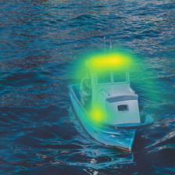

使用CV类解释器

什么是CV类解释器
解释器是一些用来解释AI模型决策的算法，目前 MindSpore XAI 为图片分类场景提供7个解释器算法。解释器输出热力图作为解释，它们代表了每个原图象素的重要性，其中高亮区域为对模型决策起重要作用的部分。
热力图覆盖在原图上：
解释器主要分为两大类：基于梯度的 及 基于扰动的。基于梯度的解释器依赖反向传播去计算象素的重要性，而基于扰动的解释器则是使用随机扰动原图的方法进行计算。
解释器 |
类型 |
PYNATIVE_MODE |
GRAPH_MODE |
|---|---|---|---|
Gradient |
梯度 |
支持 |
支持 |
GradCAM |
梯度 |
支持 |
|
GuidedBackprop |
梯度 |
支持 |
|
Deconvolution |
梯度 |
支持 |
|
Occlusion |
扰动 |
支持 |
支持 |
RISE |
扰动 |
支持 |
支持 |
RISEPlus |
扰动 |
支持 |
准备
下载教程数据集及模型
下载并解压缩用例数据包 xai_examples_data.tar.gz 到 XAI 本地 源码包 中的xai/examples/文件夹：
wget https://mindspore-website.obs.myhuaweicloud.com/notebook/datasets/xai/xai_examples_data.tar.gz
tar -xf xai_examples_data.tar.gz
git clone https://gitee.com/mindspore/xai
mv xai_examples_data xai/examples/
xai/examples/ 文件：
xai/examples/
├── xai_examples_data/
│ ├── ckpt/
│ │ ├── resent50.ckpt
│ ├── train/
│ └── test/
├── common/
│ ├── dataset.py
│ └── resnet.py
├── using_cv_explainers.py
├── using_rise_plus.py
└── using_cv_benchmarks.py
xai_examples_data/：解压缩后的用例数据包。xai_examples_data/ckpt/resent50.ckpt：ResNet50 权重。xai_examples_data/test： 测试数据。xai_examples_data/train： 训练数据。common/dataset.py： 数据加载器。common/resnet.py： ResNet 模型架构。using_cv_explainers.py： 解释器用例。using_rise_plus.py： RISEPlus 解释器用例，它的使用方法跟其他解释器不同。using_cv_benchmarks.py： 度量方法用例。
准备 Python 环境
以下教程的完整代码：using_cv_explainers.py 。
下载用例数据包后，我们要加载一个训练好的分类器和一张要进行推理及解释的图片：
# 必须先把当前目录切换到 xai/examples/
from mindspore import load_checkpoint, load_param_into_net, set_context, PYNATIVE_MODE
from common.resnet import resnet50
from common.dataset import load_image_tensor
# 有20个类
num_classes = 20
# 加载训练好的分类器
net = resnet50(num_classes)
param_dict = load_checkpoint("xai_examples_data/ckpt/resnet50.ckpt")
load_param_into_net(net, param_dict)
# [1, 3, 224, 224] 图片 Tensor
boat_image = load_image_tensor("xai_examples_data/test/boat.jpg")
使用 GradCAM
GradCAM是一个典型及有效的梯度解释器：
from PIL import Image
import mindspore as ms
from mindspore import Tensor
from mindspore_xai.explainer import GradCAM
from mindspore_xai.visual.cv import saliency_to_image
# 只支持 PYNATIVE_MODE
set_context(mode=PYNATIVE_MODE)
# 通常指定最后一层的卷积层
grad_cam = GradCAM(net, layer="layer4")
# 3 是'boat'类的ID
saliency = grad_cam(boat_image, targets=3, show=False)
# 将热力图转换为 PIL.Image.Image 对象
orig_img = Image.open("xai_examples_data/test/boat.jpg")
saliency_to_image(saliency, orig_img)
如果输入的是一个 1xCx224x224 的图片Tensor，那返回的saliency就是一个 1x1x224x224 的热力图Tensor。
批次解释
对于梯度解释器，批次解释通常较有效率，但其他解释器也可以使用：
from common.dataset import load_dataset
test_ds = load_dataset('xai_examples_data/test').batch(4)
for images, labels in test_ds:
saliencies = grad_cam(images, targets=ms.Tensor([3, 3, 3, 3], dtype=ms.int32))
# 其他用户操作 ...
如果输入的是一个 4xCx224x224 的批次图片Tensor，那返回的saliency就是一个 4x1x224x224 的批次热力图Tensor。
使用其他解释器
使用其他解释器(RISEPlus 除外)的方法跟 GradCAM 的使用方法十分相似 。
使用 RISEPlus
以下教程的完整代码：using_rise_plus.py 。
RISEPlus是一个基于RISE的解释器，它引入了分布外侦测器，解决了RISE在遇到分布外(OoD)样本时产生的热力图劣化问题。
首先，我们要使用分类器的训练数据集去训练一个分布外侦测器(OoDNet)：
# 必须先把当前目录切换到 xai/examples/
from mindspore import set_context, save_checkpoint, load_checkpoint, load_param_into_net, PYNATIVE_MODE
from mindspore.nn import Softmax, SoftmaxCrossEntropyWithLogits
from mindspore_xai.tool.cv import OoDNet
from mindspore_xai.explainer import RISEPlus
from common.dataset import load_dataset, load_image_tensor
from common.resnet import resnet50
# 只支持 PYNATIVE_MODE
set_context(mode=PYNATIVE_MODE)
num_classes = 20
# 分类器的训练数据集
train_ds = load_dataset('xai_examples_data/train').batch(4)
# 加载训练好的分类器
net = resnet50(num_classes)
param_dict = load_checkpoint('xai_examples_data/ckpt/resnet50.ckpt')
load_param_into_net(net, param_dict)
ood_net = OoDNet(underlying=net, num_classes=num_classes)
# 如果分类器的激活函数是 Softmax，我们要使用 SoftmaxCrossEntropyWithLogits 作为损失函数，如果激活函数是 Sigmoid 则使用
# BCEWithLogitsLoss 作为损失函数
ood_net.train(train_ds, loss_fn=SoftmaxCrossEntropyWithLogits())
save_checkpoint(ood_net, 'ood_net.ckpt')
下游分类器(underlying)的父类必须为nn.Cell，以及在__init()__函数内：
定义一个名为
num_features的int成员，它代表了在特征层输出的特征值个数。定义一个名为
output_features的bool成员并使用False作为初始值，OoDNet会使用output_features来控制分类器是否在construct()输出特征Tensor。
一个 LeNet5 的例子：
from mindspore import nn
from mindspore.common.initializer import Normal
class MyLeNet5(nn.Cell):
def __init__(self, num_class, num_channel):
super(MyLeNet5, self).__init__()
# 必须定义以下两个成员
self.num_features = 84 # 特征值个数, int
self.output_features = False # 是否输出特征Tensor, bool
self.conv1 = nn.Conv2d(num_channel, 6, 5, pad_mode='valid')
self.conv2 = nn.Conv2d(6, 16, 5, pad_mode='valid')
self.relu = nn.ReLU()
self.max_pool2d = nn.MaxPool2d(kernel_size=2, stride=2)
self.flatten = nn.Flatten()
self.fc1 = nn.Dense(16 * 5 * 5, 120, weight_init=Normal(0.02))
self.fc2 = nn.Dense(120, self.num_features, weight_init=Normal(0.02))
self.fc3 = nn.Dense(self.num_features, num_class, weight_init=Normal(0.02))
def construct(self, x):
x = self.conv1(x)
x = self.relu(x)
x = self.max_pool2d(x)
x = self.conv2(x)
x = self.relu(x)
x = self.max_pool2d(x)
x = self.flatten(x)
x = self.relu(self.fc1(x))
x = self.relu(self.fc2(x))
# 如果 output_features 是 True, 返回特征Tensor
if self.output_features:
return x
x = self.fc3(x)
return x
现在，我们可以使用训练好的OoDNet去构造RISEPlus解释器输出热力图：
from PIL import Image
from mindspore_xai.visual.cv import saliency_to_image
# 如果是要从 checkpoint 文件读取 OoDNet 的权重，我们就要传入一个新构造的下游分类器对象
ood_net = OoDNet(underlying=resnet50(num_classes), num_classes=num_classes)
param_dict = load_checkpoint('ood_net.ckpt')
load_param_into_net(ood_net, param_dict)
rise_plus = RISEPlus(ood_net=ood_net, network=net, activation_fn=Softmax())
boat_image = load_image_tensor("xai_examples_data/test/boat.jpg")
saliency = rise_plus(boat_image, targets=3, show=False)
orig_img = Image.open("xai_examples_data/test/boat.jpg")
saliency_to_image(saliency, orig_img)
如果输入的是一个 1xCx224x224 的图片Tensor，那返回的saliency就是一个 1x1x224x224 的热力图Tensor。
